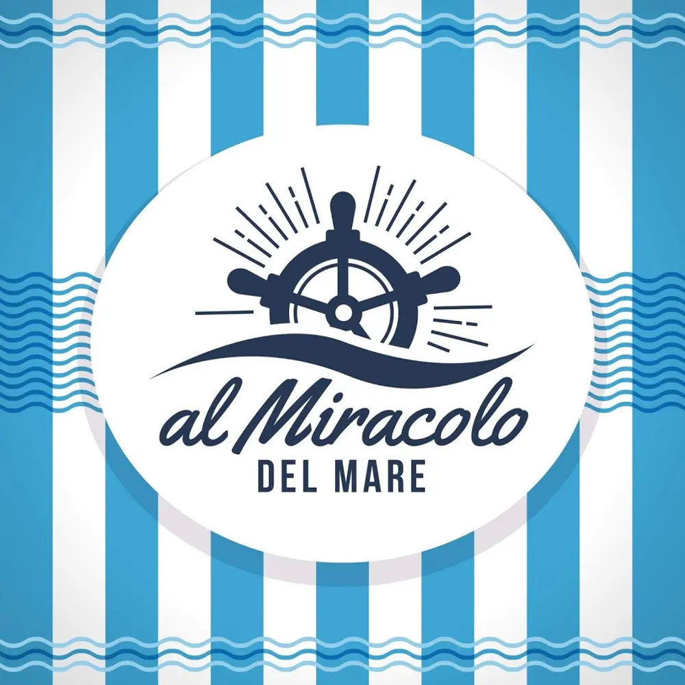
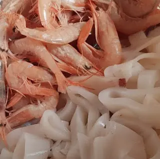
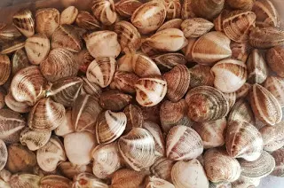
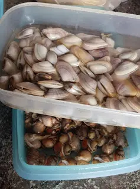
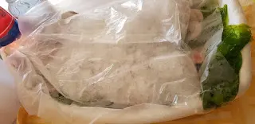
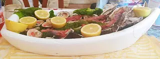
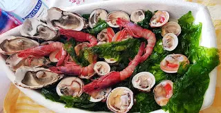
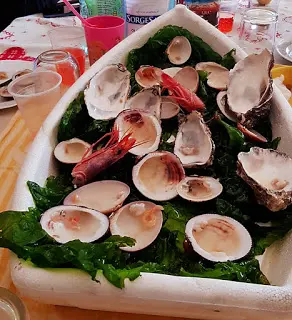
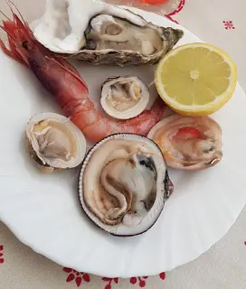
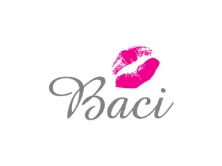

AL MIRACOLO DEL MARE - pescheria

Il pesce fresco, per gustarlo in ogni sua sfumatura, è naturale che si acquisti di qualità ed è per questo che mi sono rivolta alla migliore pescheria.
A Napoli siamo abituati a mangiare il pesce in ogni modo ma mangiarlo crudo è ciò che amiamo di più, ogni famiglia ha come riferimento una pescheria di fiducia e io oggi voglio consigliarvi AL MIRACOLO DEL MARE.
Il nome è già tutto un programma e posso dire, con piacere e con estrema semplicità, che è davvero un nome azzeccato.
Dove si trova Al miracolo del mare?
Questa pescheria si trova a Volla provincia di Napoli in Via Lufrano, 31.
C'è una vasta scelta di ogni tipo di pesce che si desidera, crostacei, molluschi e tanto altro.



Un personale davvero attento al cliente ed esperto, basta chiedere e potete acquistare davvero ciò che vi consigliano senza nemmeno controllare, coma siamo soliti fare.
Parcheggio:
La cosa che più aiuta il cliente è anche l'ampio parcheggio di cui dispone, importante in quanto potete così aspettare il vostro turno e scegliere tutto quello che volete in totale tranquillità e senza la fretta dell'auto.
Ho avuto il piacere di assaggiare e mangiare il pesce fresco acquistato da AL MIRACOLO DEL MARE e sono rimasta più che soddisfatta.
Innanzitutto già dalla preparazione, vi mostro come è stato preparato il mio crudo e come l'ho poi portato a casa.


In questa stupenda barchetta molto scenografica e di bella presenza. Pensate di comprare del pesce da portare a cena da amici, è più bello presentato e regalato in un modo originale dall'aria del tutto marina. Sembra veramente di portare il mare in tavola.



Idea fantasiosa ed originale per presentare il pesce.
A me è piaciuta molto questa idea, l'abbiamo messa direttamente a centro tavola e ognuno prendeva ciò che gli piaceva.
Tutto questo non ha nemmeno prezzi esorbitanti, anzi, il rapporto qualità - prezzo, a mio avviso, è ottimo.
Opinione:
Dunque ricapitolando, prezzi convenienti, presentazione originale, parcheggio ampio e personale cordiale, preparato e disponibile.
È il caso di dire che questa pescheria dispone delle 4 P :D
Vi consiglio ad occhi chiusi di andare da loro e sono sicura che non uscirete da lì a mani vuote.
